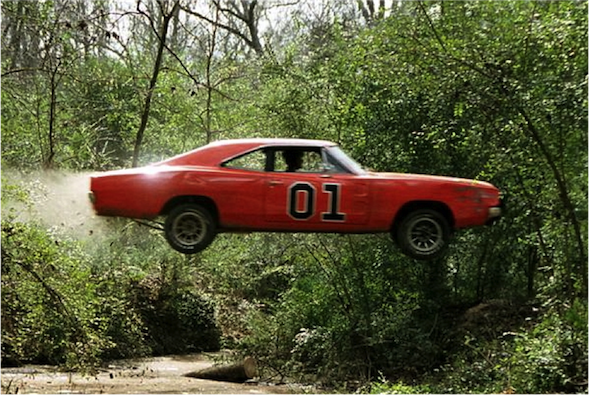

A car comes to a bridge during a storm and finds the bridge washed out. The driver must get to the other side, so he decides to try leaping it with his car. The side the car is on is 23.6 above the river, while the opposite side is a mere 6.60 above the river. The river itself is a raging torrent 62.0 wide. What is the speed of the car just before it lands safely on the other side?